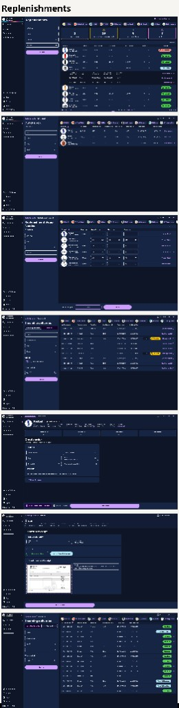

Introduction
One module, the full replenishment lifecycle
Replenishment is one of the most operationally critical areas for any retail store — and one of the most fragmented. Store managers were tracking out-of-stock items, supplier orders, and incoming deliveries across disconnected systems, with no central view to act from.
This project focused on designing the Replenishments module within Focalpay's back-office admin panel — a complete solution covering 7 interconnected flows, from initial product setup through to confirming deliveries and handling overdue orders. The module was designed in close collaboration with both business stakeholders and the development team, culminating in a full handoff document for backend and frontend engineers.
My Responsibilities
- UX/UI Designer — end to end, from research and flows through to final specs
- Mapping 7 user flows and cross-flow navigation logic
- Designing the replenishment overview with smart status cards
- Designing out-of-stock, incoming delivery, and setup-needed flows
- Overdue delivery management and notification centre design
- Status system design (Out of Stock, Incoming, In Stock, Overdue, Setup Needed)
- Developer handoff: component specs, API alignment, permissions model
- Extending the existing Focalpay design system without regressions
Discover
Inventory management was flying blind
Before this module, Focalpay's back-office had no dedicated replenishment system. Store managers had to manage stock manually — checking spreadsheets, calling suppliers, and tracking deliveries without a single source of truth. Three core problems shaped the design brief.
No stock visibility
Store managers had no clear view of which products were out of stock, which were incoming, and which were missing replenishment configuration entirely.
Fragmented order tracking
Supplier orders were placed outside the system. There was no way to track delivery status, confirm receipt of partial deliveries, or flag overdue orders automatically.
Missing product setup
Many products lacked the minimum and maximum stock thresholds required for replenishment eligibility — making the system unreliable from the start.
"We know we're running low, but we can't tell at a glance which products need ordering and which are already on their way."
— Store Manager, Focalpay Pilot RetailerScope
7 flows covering the full replenishment lifecycle
The Replenishments module is not a single screen — it is a system of 7 interconnected flows, each serving a distinct moment in the inventory management cycle. Every flow links to the others through a shared navigation structure and a notification centre that surfaces the most urgent actions.
Initial product setup
Allows store managers to configure Current, Minimum, and Maximum stock thresholds for any product — the prerequisite for replenishment eligibility.
Replenishment overview
The central hub — shows all replenishment-eligible products with their live status, ordered quantities, and summary cards for Out of Stock, Incoming, Setup Needed, and Shelf Refill.
Out of stock
Lists all products where current stock is at or below minimum. Managers can place orders to one or more suppliers directly from this view — with automated email confirmation.
Incoming deliveries
Tracks all open orders split across two tabs: Awaiting arrival and Received. Managers can confirm full or partial receipts, upload invoices, and add notes per delivery.
Replenishment setup needed
Surfaces products missing valid stock thresholds. Managers can edit Current, Min, and Max stock inline — with batch save to fix multiple products at once.
Notification centre
A global bell icon with live badge counts for Out of Stock, Overdue deliveries, and Setup Needed — linking directly to the relevant flow for immediate action.
Overdue deliveries
Lists orders where the expected delivery date has passed and the receipt is incomplete. Managers can contact the supplier, update the expected date, and mark orders as handled.
Design challenge I
A status system that makes every product's situation clear at a glance
One of the most important design decisions in the module was defining a clear, consistent product status system. Every product in the replenishment list needs an immediately readable status — because managers scan hundreds of items and need to act fast.
| Status | Trigger condition | Required action |
|---|---|---|
| Out of stock | Current stock = 0 or ≤ Minimum stock | Place order via Out of Stock flow |
| Incoming | At least one open order with received < ordered | Confirm receipt via Incoming Deliveries |
| In stock | Eligible, not out of stock, not incoming | Monitor; no action required |
| Overdue | Today > Expected delivery date, receipt incomplete | Contact supplier, update date, or mark handled |
| Setup needed | Missing or invalid Current / Min / Max stock | Configure via Setup Needed flow |

Replenishment overview — status cards surface the most urgent actions; the product table shows live status per SKU
Design challenge II
Placing orders without leaving the out-of-stock view
When a product is out of stock, the manager needs to act immediately — but the old process meant navigating to a separate ordering system. I designed a frictionless order creation flow directly within the Out of Stock view, allowing orders to be placed to one or multiple suppliers from a single product page.
The order form surfaces key product data upfront — EAN, pack size, out price, margin, and current/min/max stock — so managers have the full context they need before committing to an order quantity. Supplier email is auto-filled, and the system sends order confirmation automatically on submit.

Out of stock list — each product shows shelf amount, current stock, min/max, and a direct "Place order" action

Create order form — product context at the top, one order block per supplier, automatic cost calculation, email confirmation on submit
Design challenge III
Confirming deliveries — full, partial, and overdue
Delivery confirmation was one of the most complex flows to design. A real-world delivery can arrive on time and complete, arrive partially, or not arrive at all — each scenario requiring a different response from the manager. I designed the Incoming Deliveries flow around two clear tabs (Awaiting / Received) and a Confirm Receipt page that handles all three scenarios.
Awaiting deliveries tab — lists all open orders with order number, product, supplier, total units, order date, and delivery date. Overdue orders surface with a clear badge and "Manage order" action.
Received tab — shows completed and partially received orders. Status badges (Received / Partially Received) give managers a clear audit trail of every delivery.
Confirm receipt page — managers enter received quantity and delivery date, choose "Mark as Received" or "Mark as Partially Received", upload the invoice, and add a note explaining any discrepancy.

Awaiting deliveries — overdue orders are automatically flagged with the number of days overdue and a "Manage order" action

Received tab — complete delivery history with Received / Partially Received status per order

Confirm receipt — received quantity, delivery date, full or partial status, invoice upload, and a notes field for discrepancies
Design challenge IV
Fixing missing product configuration in bulk
A product cannot participate in replenishment until its Current, Minimum, and Maximum stock values are set — and the minimum must not exceed the maximum. When products are missing this configuration, they surface in the Replenishment Setup Needed flow.
Rather than requiring managers to navigate to each product individually, I designed an inline editing table where all three stock values can be edited directly in the list. Changes are tracked per row and saved as a batch — one click saves all modified products simultaneously, with per-row validation errors returned if any value is invalid.
Setup needed — managers edit Current, Min, and Max stock inline; unsaved changes are tracked and saved in one action
Process
From flows to handoff
This project required close alignment between UX decisions and technical implementation. Rather than designing in isolation, I worked alongside the engineering team throughout — validating flow logic against real API constraints and contributing to the handoff document that guided frontend and backend development.
Flow mapping & scope definition
Mapped all 7 replenishment flows and their cross-flow navigation. Defined business rules for each product and order status — eligibility, out-of-stock, overdue, and setup-needed logic.
Status system design
Designed a consistent product and order status taxonomy — ensuring every state (Out of Stock, Incoming, Overdue, Partially Received, Setup Needed) had a distinct visual treatment and a clear action path.
Wireframes & Figma prototypes
Built wireframes for all 7 flows, with mid-fi Figma prototypes for the most complex interactions — the overview cards, order creation, confirm receipt, and overdue management.
Design system extension
Added status chips, inline editable table rows, expandable order lines, and notification badge patterns to the existing Focalpay design system — without breaking existing components.
Developer handoff
Produced a full developer handoff document (v1.0, Feb 2026) covering component specs, API structure, data model, permissions model, error handling, and frontend state management — aligned with backend and frontend teams.
Results
A complete replenishment system, ready to ship
The Replenishments module gives store managers a single place to see everything that matters about their inventory — what's out of stock, what's on its way, what's overdue, and what still needs to be configured. Every flow connects to the others, and the notification centre ensures nothing falls through the cracks.
Interface
Screens from the back-office
Representative UI from the Replenishments module: overview, filters, and tables; order and receipt flows; and status views across the seven connected flows.

Reflection
What this project taught me
System design is about flows, not screens
The biggest challenge wasn't designing any individual screen — it was ensuring that 7 flows connected coherently, with consistent status logic and navigation that never left the user stranded. Thinking in systems before thinking in screens made every individual design decision easier.
Handoff is a design artefact, not an afterthought
Writing the developer handoff document forced me to resolve ambiguities I hadn't noticed in the designs — edge cases in error handling, permission logic, and state transitions. The handoff made the designs more precise, not just more documented.
Status systems need to earn their simplicity
Each status chip looks simple — a colour and a label. But behind each one is a precise business rule, a distinct visual, and a clear next action. Getting the status system right required more iteration than almost any other part of the module.